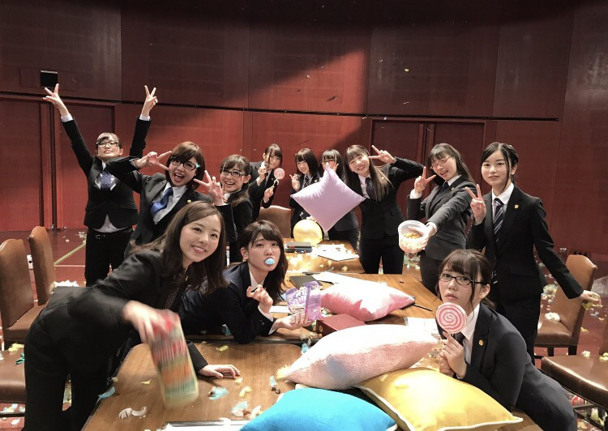
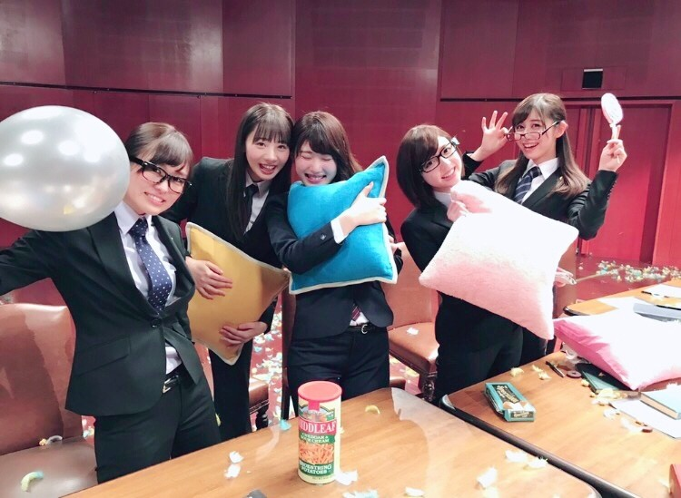
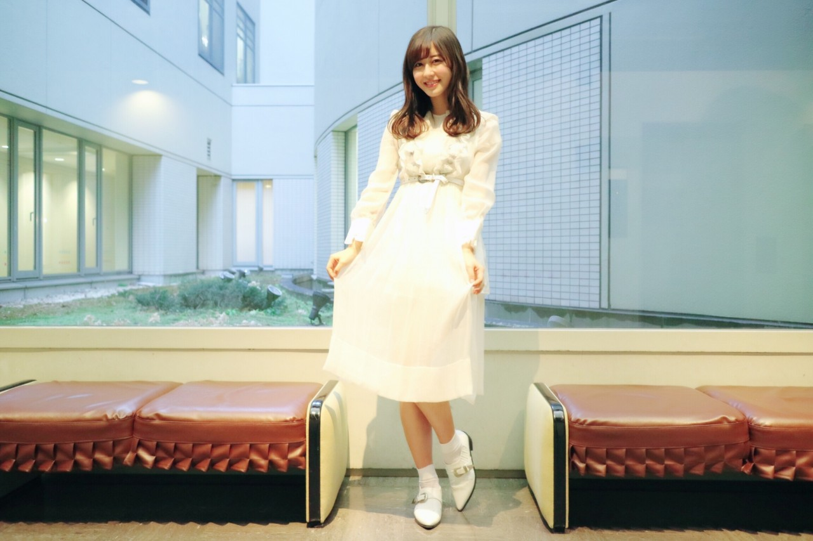

| 2017/03 15 Wed | 斎藤ちはる 風船は。 |
今日は靴の記念日。
輸入した靴が日本人には大きすぎて合わなくて
日本人に合う靴を作るために
作られた日らしいです！！
確かに外国の靴よりも日本の靴の方が
幅だったり甲だったり
ぴったり合うような気もするね◎
それはこの日のおかげだったんだ！
と思うと日本の歴史は凄いですね〜
そして今日は17thアンダーメンバーの曲、
「風船は生きている」のMVが
期間限定で公開開始されました！！
乃木坂としては珍しい
スーツ×メガネの衣装でした！
みんなのスーツ姿を見るのは新鮮〜◎

オールアップしたときの写真。
楽しすぎる撮影だったので
みんなのこの笑顔が眩しいっ
散らかり具合も頑張った証拠だね◎
こんなに散らかせるのもなかなかないので
此処ぞとばかりに投げ合いました笑

にこにこ☺︎
そしてもう一つの衣装もお気に入りでした！
みんな白い衣装なんだけど
それぞれ違っていて個性的。

私はこんな感じ！
膝丈で長めなワンピースなんだけど
シースルーになっているので
春らしく、かる〜いイメージになってます◎
髪の毛も、ダンスシーンは
ゆるふわ巻きにしましたっ
まだまだ写真はあるので
また載せたいと思います〜！！
みり愛のセンター、
絢音ザキの二期生フロント、
過去最少の12人のみのメンバー。
17thは今までとは一味違った
シングルになりそうですね、
楽しみ！
ちなみに私は2列目の端、
伊織とシンメトリーになってます！
今回も2列目、有難いですヽ(；；)丿
皆さんから見て向かって左側にいますので
多分見つけやすいかと思います◎
17thも宜しくお願いします！！
------------------------------------------------♡
♬ ChihaMusic
「今まで君が泣いた分取り戻そう」【Alexandros】さん
切なくて勇気の出る
とってもとっても優しい曲。
洋平さんの声が素敵すぎる。
"もう僕らには時間がないから
当たり前のように
同じじゃないから"
この部分がグサっときた。
当たり前だと思っている事は
当たり前では無くなってしまう。
時間が過ぎたら変わっていってしまう。
毎日を全力で生きようと思える。
侍ジャパン、全勝して準決勝進出！！！
なんて素敵なチームなのだろう。
ヒーローインタビューを聞いていても
チームのために、勝つために。
という気持ちが一つになっていて
凄いなと思いました。
頑張れ日本！！
おやすみ
斎藤ちはる